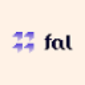

МолекулаАгрегаторы нейросетей
Молекула объединяет модели для текстов, изображений, видео и музыки. В одном аккаунте можно подобрать инструмент под этап работы, сохранить инструкции проекта и использовать готовые роли.
К задаче в МолекулеРаздел «Бизнес»: варианты ИИ для этой задачи, описания возможностей и переходы к обзорам. Сравните несколько решений на одинаковом примере.
Соберите сведения о продукте, клиентах и правилах работы в одном документе. Молекула поможет упорядочить контекст; ответственный сотрудник подтверждает факты и обновляет их при изменениях.
Собери паспорт нашей студии по этим заметкам: услуги, ограничения, процесс согласования и вопросы клиентов. У неизвестных условий поставь отметку на уточнение. Не добавляй достижения компании.

Молекула объединяет модели для текстов, изображений, видео и музыки. В одном аккаунте можно подобрать инструмент под этап работы, сохранить инструкции проекта и использовать готовые роли.
К задаче в Молекуле«Beepo» работает с материалами для социальных площадок.
«INOP» представлен в разделе «Бизнес». При выборе проверьте нужную операцию и условия работы с результатом.
«Lava Metrics» представлен в разделе «Бизнес». При выборе проверьте нужную операцию и условия работы с результатом.
«Massive» помогает соединить повторяемые рабочие действия.
Сравнивать «Morpheus-1 by Prophetic AI» с другими инструментами раздела «Бизнес» удобнее на одинаковом исходном материале.
«Onlycoms.com» представлен в разделе «Бизнес». При выборе проверьте нужную операцию и условия работы с результатом.
«PropFlo» работает с задачами ведения клиентских данных.
Сравнивать «temo» с другими инструментами раздела «Бизнес» удобнее на одинаковом исходном материале.
Zixflow объединяет управление клиентами и маркетинговые действия с участием ИИ. В продукте представлены CRM и автоматизация задач, а также формы для контактов потенциальных клиентов. Проверка почтовых адресов и шаблоны продаж дополняют работу с данными и коммуникацией в выбранных каналах.
Для «ОФИС ВИЖЕН» сначала определите свою задачу и требуемый результат. Карточка относится к направлению «Бизнес».

В инструменте «AKOOL» можно переносить образ лица на изображение или видеокадр. Ещё одно направление работы: собирать видеосцену по описанию или визуальному исходнику.
EDOM AI помогает обсуждать предпринимательские идеи и получать советы для развития бизнеса. Пользователь обращается к стратегиям компаний и предпринимателей, представленным в сервисе. Помощник объединяет генерацию замысла с рекомендациями по предприятию, чтобы рассматривать новое направление рядом с существующими деловыми подходами.
Для «Element-lab.ru» сначала определите свою задачу и требуемый результат. Карточка относится к направлению «Бизнес».
«Enif» разбирает данные для рабочего анализа.
Сравнивать «Harriet AI» с другими инструментами раздела «Бизнес» удобнее на одинаковом исходном материале.
«ProAI» помогает оформить бизнес-план.
«Rootly» представлен в разделе «Бизнес». При выборе проверьте нужную операцию и условия работы с результатом.
«Rose AI» представлен в разделе «Данные и аналитика». При выборе проверьте нужную операцию и условия работы с результатом.
Сравнивать «AI Domain Genius» с другими инструментами раздела «Бизнес» удобнее на одинаковом исходном материале.
BlockSurvey помогает готовить опросы с помощью ИИ без написания программного кода. Продукт ориентирован на бизнес и создание опросного материала. Его назначение связано с оформлением способа сбора ответов, когда компания использует инструмент для подготовки опроса, не разрабатывая отдельное приложение самостоятельно.
Donovan использует генеративные модели для работы с данными федеральных агентств. Платформа анализирует структурированные записи и неструктурированный материал, предоставляя сведения для рассмотрения решений. Основной сценарий связывает обработку разных источников информации с рабочими процессами организации и подготовкой содержательного результата для сотрудников.
E-label.io помогает готовить электронные этикетки для вин с динамическими QR-кодами. Пользователь настраивает маркировку и обращается к автоматическому переводу. Предусмотрено подключение к ERP и интернет-магазинам, чтобы связывать подготовку информации на этикетке с рабочими системами производителя или продавца.
Сравнивать «Facemetric» с другими инструментами раздела «Бизнес» удобнее на одинаковом исходном материале.
«Hive» представлен в разделе «Бизнес». При выборе проверьте нужную операцию и условия работы с результатом.
«Job Description Generator» подготавливает описание вакансии по сведениям о роли.
Для «MakerPeak» сначала определите свою задачу и требуемый результат. Карточка относится к направлению «Бизнес».
Predict Expert AI создаёт модели ИИ под потребности отдельного бизнеса. Через настроенное решение организация получает информацию в реальном времени для рассмотрения своих решений. Продукт ориентирован на индивидуальную модель: её работа и выдаваемые сведения привязаны к конкретному деловому контексту заказчика.
Сравнивать «Qualli» с другими инструментами раздела «Бизнес» удобнее на одинаковом исходном материале.
«RecPlace» представлен в разделе «Бизнес». При выборе проверьте нужную операцию и условия работы с результатом.
Для «Signum AI» сначала определите свою задачу и требуемый результат. Карточка относится к направлению «Бизнес».

StockGPT предназначен для поиска сведений в отчётности Tesla через вопросы к ИИ. Запрос можно привязать к отчётному периоду, чтобы разбирать финансовые материалы компании. Ответы требуют сверки с документами: инструмент не предназначен для прогнозирования будущих результатов или принятия инвестиционных решений вместо пользователя.
Для «ThumbsUp» сначала определите свою задачу и требуемый результат. Карточка относится к направлению «Бизнес».
«Value My Car» разбирает данные для рабочего анализа.
Для «Vellum» сначала определите свою задачу и требуемый результат. Карточка относится к направлению «Бизнес».
Сравнивать «VenturusAI» с другими инструментами раздела «Бизнес» удобнее на одинаковом исходном материале.
«Village» представлен в разделе «Бизнес». При выборе проверьте нужную операцию и условия работы с результатом.
Сравнивать «Zuro» с другими инструментами раздела «Бизнес» удобнее на одинаковом исходном материале.
Для «Adeptik» сначала определите свою задачу и требуемый результат. Карточка относится к направлению «Бизнес».
Для «AI Booster» сначала определите свою задачу и требуемый результат. Карточка относится к направлению «Бизнес».
«Biscuits AI» помогает подготовить документ о правилах обработки данных.
Для «ChainGPT» сначала определите свою задачу и требуемый результат. Карточка относится к направлению «Бизнес».
«Deckify» собирает материал для презентации.
«Eclipse AI» разбирает данные для рабочего анализа.

«Fal AI» разбирает данные для рабочего анализа.
Сравнивать «Holly» с другими инструментами раздела «Бизнес» удобнее на одинаковом исходном материале.
Сравнивать «June AI» с другими инструментами раздела «Данные и аналитика» удобнее на одинаковом исходном материале.
Nowadays помогает организовывать корпоративные мероприятия, подбирая площадки и варианты поездок. ИИ-планировщик предлагает направления и занятия для программы, а также работает с предложениями мест проведения. Поиск охватывает разные страны, позволяя рассматривать площадку и содержание мероприятия в общей задаче организации.
Страница 1 из 4